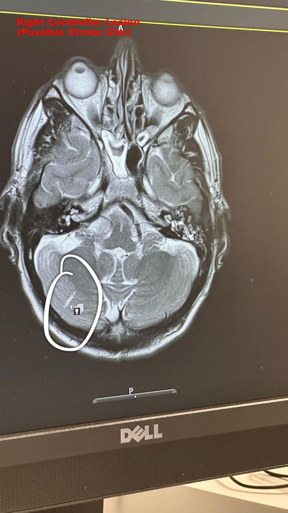

Date: July 2025 Prepared for: GP and Neurology Team
Findings from MRI Imaging
1. Cervical Spinal Cord Lesion (C5/6)
The following image demonstrates a hyperintense signal within the cervical spinal cord at the C5/6 level. This is consistent with inflammation or previous myelitis, as interpreted by the consulting neurologist in the July 2025 letter.
2. Right Cerebellar Lesion
This axial T2-weighted MRI brain scan shows a signal abnormality in the right cerebellar hemisphere. The radiological impression and clinical correlation suggest a subacute infarct (stroke), which may explain coordination disturbances and left-sided sensory effects.

Integrated Clinical Summary
Symptoms: Ongoing left-sided nerve pain, paresthesia, muscle tightness, visual and auditory sensitivity, and worsening gait and balance.
Brain: Right cerebellar infarct identified on MRI (July 2025)
Additional Neurological Signs: Pale optic disc, asymmetrical pupils, vibration loss at left ASIS, occipital neuropathy with regional alopecia
Systemic Context: Symptoms initiated following AstraZeneca COVID-19 vaccine (2021) and have progressively worsened over 4 years
Investigations and Referrals
Pending lumbar puncture (CSF analysis)
Carotid and vertebral CT angiogram
Bubble echocardiogram (to check for paradoxical embolism)
Evoked potentials and full autoimmune panel (MOG, AQP4, ANA, ENA)
Clinical Impression
The patient presents with dual-site central nervous system lesions consistent with both vascular (cerebellar infarct) and inflammatory (cervical spinal cord) origins. This is consistent with post-vaccine neuroinflammatory syndrome and requires urgent multi-specialist involvement (neurology, immunology, neurovascular).